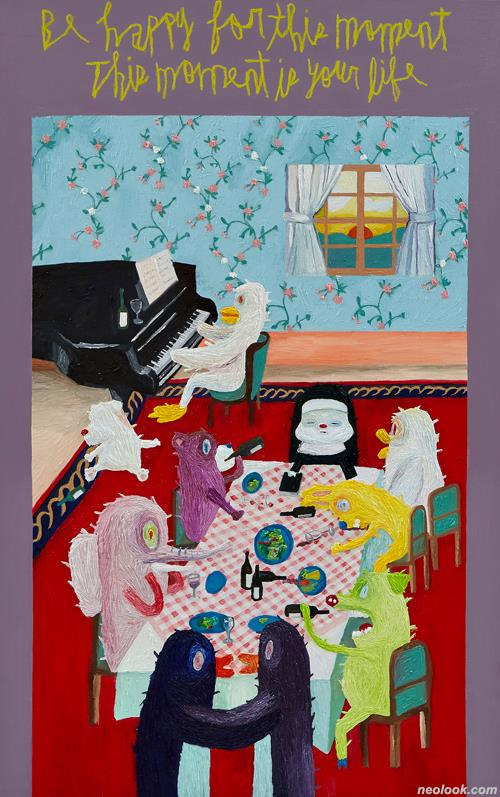
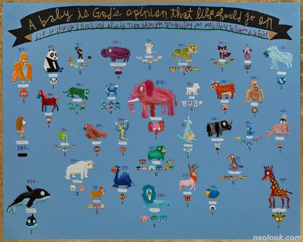

우국원
***『It's The Hard Knock Life』***
무엇을
>>동물, 인간
어떻게
>>존재들에게 알 수 없는 표정을 그려 넣음. 순수하고 사랑스럽게 그림. 자유분방하게 그림. 솔직한 감정과 일상 속 다양한 경험을 바탕으로 흘려 쓴 듯 그려진 문구와 그만의 색감
왜
>>삶의 탄생과 죽음의 이야기를 담아 오늘날과 같은 시련에도 도전적인 자세로 극복해 행복한 일상을 되찾아가길 바라며 감상자의 지친 마음에 위로와 희망을 전달하는 신작을 선보인다.
작가 의도
>> 작품 해석을 감상자의 몫으로 넘김으로써 개개인의 경험을 기반으로 본인만의 작품 해석과 이야기를 만드는 진정한 동화적 상상을 가능하게 한다.

-우국원_5'O'Clock in The Morning_캔버스에 유채_116.8×72.7cm_2021

-우국원_Tomorrow, Tomorrow, I love Your Tomorrow 캔버스에 유채_181.8×227.3cm_2021